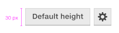
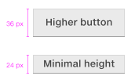
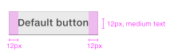
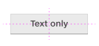
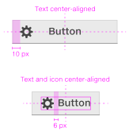
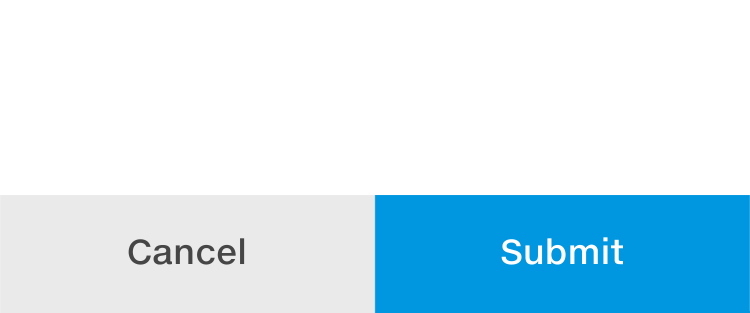
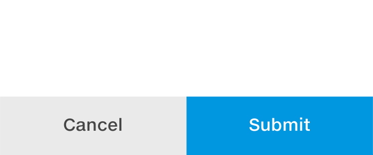

Normal button
This is the default button that is typically used for actions and initiating dialogs that do not require any particular emphasis.
This is the default button that is typically used for actions and initiating dialogs that do not require any particular emphasis.
Discrete buttons don’t have an outline and are especially useful for icons.
A primary action button can be used for any call-to-action or step that requires specific emphasis. Typically to commit an action or to proceed to next step.
The height of a button is defined by the font size. For a normal desktop application the default font size is 12 px and the default button height is 30 px (2,5 x font size).
Just make sure that they align to the baseline and that your buttons are at least twice the font size.
The length of your button label and the horizontal padding defines the width of your button.
The padding is equal to the font size, but for the minimum button the padding can be decreased to half the font size (ex. font size 12 px, padding 6 px).
Text is by default centered on buttons.
Icon and text is by default left aligned, but can be adapted based on context.
Touch devices vary from 70'' TV screens to 4'' phones, with a wide variety of resolutions. There is no 'one size fits all' specification for touch button sizes, so be sure to follow guidance for each platform and test early on a representative set of touch devices.
 
